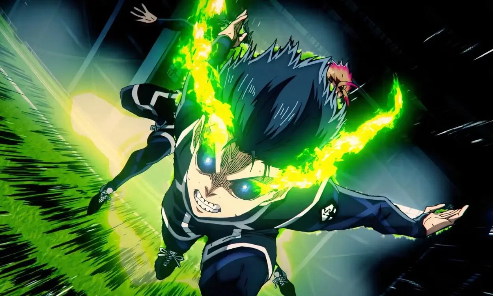

Every character who refused to give up reminded me that I don’t have to either.
Anime, for me, isn’t just entertainment. It’s motivation. It’s a reflection. Its growth. The best series don’t just tell a story. They challenge you. They push you. They hold a mirror up to your fears, your ambition, and your limits. These are the anime that didn’t just stay on my screen. They stayed with me.
Top Animes
- Blue Lock
- Attack on Titan
- Demon Slayer
- Black Clover
- Solo Leveling
Blue Lock
Blue Lock hit me immediately with its intensity. What really stuck with me was Isagi’s turning point in the beginning. He had a choice: play it safe and follow the crowd, or trust that small spark inside him and aim higher. When he unconsciously stepped into his ego and chose to rise instead of blend in, that moment screamed at me. It reminded me that sometimes the difference between average and extraordinary is believing you deserve to aim higher. The quotes, rivalries, psychological battles, and the growth each character experiences make it more than just a sports anime. It’s about ambition. It’s about hunger. It’s about choosing to stand out.
Attack on Titan
Attack on Titan is emotional chaos in the best way. It makes you question everything. The final season (more like the final movie) especially shook me. The shifts, the revelations, the moral gray areas. Nothing stays simple. One moment that gives me chills every time is Commander Erwin’s speech. It’s about standing firm even when fear is screaming at you. There are so many powerful moments in this series, but that speech? That conviction? It motivates me deeply.
- Attack on Titan reminds me that even in a broken world, resolve matters.
-
Everything that you thought had meaning: every hope, dream, or moment of happiness. None of it matters as you lie bleeding out on the battlefield. None of it changes what a speeding rock does to a body, we all die. But does that mean our lives are meaningless? Does that mean that there was no point in our being born? Would you say that of our slain comrades? What about their lives? Were THEY meaningless?... THEY WERE NOT! THEIR MEMORY SERVES AS AN EXAMPLE TO US ALL! The COURAGEOUS fallen! The ANGUISHED fallen! Their lives have MEANING because WE the living REFUSE TO FORGET THEM! And as we ride to certain death, we TRUST OUR SUCCESSORS to do the SAME FOR US! Because MY soldiers do not buckle or yield when faced with the CRUELTY OF THIS WORLD! MY SOLDIERS PUSH FORWARD! MY SOLDIERS SCREAM OUT! MY SOLDIERS RAAAAAGE!
- Commander Erwin Smith
Assassination Classroom
Assassination Classroom balances absurd comedy and genuine emotion in a way that sneaks up on you. At first, it feels ridiculous. A bright yellow octopus-like teacher who can destroy the Earth and a class of misfits are told that their only goal is to assassinate him. But beneath that wild setup, the story is grounded in something simple and powerful: growth. Class 3-E starts off labeled as failures. They’re pushed aside, underestimated, treated like they don’t matter. And then Koro-sensei walks in. Instead of seeing their weaknesses as proof they’re hopeless, he treats them as starting points. He studies each student carefully, finds what makes them tick, and teaches in a way that fits them. Not just how to fight or calculate a shot, but how to believe in themselves. What makes it hit so hard is that Koro-sensei isn’t just training them to kill him. He’s preparing them for a world that has already decided they would fail. He gives them tools, confidence, and pride. And by the time the story reaches its end, the emotional weight is almost unbearable. The very person who helped them grow is the one they’re meant to destroy.
- Assassination Classroom reminds me that great teachers change lives, whether in loud, dramatic ways or quiet, painful ones, and that the lessons that shape us most often stay with us the longest.
-
Don’t let one failure overshadow the skills you’ve worked so hard to cultivate. The best of us fall short of our abilities from time to time. You maintain a facade of stoic nonchalance, but feel burdened by the confidence your classmates place in you all the same. Few guess it’s your inner anguish, but it’s there just beneath the surface. You’re not alone in this. You give it a brave face, but you needn’t bear the pressure on your own. If you miss the shot, there’s a fallback strategy. We’ll play hot potato with a gun, and continue shuffling everyone until our foe has no idea where the next shot will come from. The reason that strategy won’t work is because everyone here has tasted the agony of defeat. Yes there is pressure. But your classmates are in the same boat. Learn to take solace in that. With the balance of opportunity and motivation, anyone can expand their horizon. They just have to move out of their comfort zone. But we can’t often do so on our own. We need a foe to challenge our complacency. Force us to draw upon resources we never knew we had. That, you see, is precisely why I became a teacher. To spark potential. To give my students both the opportunity to succeed and the motivation.
- Koro Sensei
Black Clover
From the moment Asta appeared on screen, I was hooked. Here’s someone born without magic in a world where magic is everything. And instead of accepting that as his limit, he decides to surpass it. There’s a moment during the elf arc where Asta speaks directly into someone’s despair and tells them not to ever give up again. The way his voice softens when he says it hits hard. It felt personal, like a reminder meant for me, too, sending shivers down my spine. And Captain Yami is constantly pushing him to go beyond his limits, which resonates deeply. I’ve had moments in my life where I had to go beyond 100%, where quitting felt easier.
- Black Clover reminds me that limits are meant to be broken.
-
I get it. You were tricked. You couldn't protect the ones you loved and everything you once believed in was lost. You're dealing with so many crazy feelings, you can't stand it anymore. But that's why, I have to tell you THIS. DON'T YOU DARE GIVE UP AGAIN. All you EVER done is give up. Instead of FACING your problems, you LOCKED yourself away and HID in the darkness because you THOUGHT it was the easiest thing to do. And now after all YOU DID you're acting like THIS?! Just because you made a MISTAKE that you can't fix, it doesn't mean you are allowed to RUNAWAY AND CRY! Think about it. Shouldn't you be trying to defeat that creepy devil guy too? YOU HAD THE GUTS TO MAKE EVERYTHING ELSE HAPPEN, RIGHT? YOU DID THAT! Maybe you weren't chosen, maybe no one wanted you and maybe you can't be forgiven; but you still have to STAND YOUR GROUND WITHOUT MAKING EXCUSES FOR YOURSELF!
- Asta
Solo Leveling
Solo Leveling connects with me on a personal level. Sung Jin-Woo starts as the weakest. The lowest rank. The one everyone looks down on. Then comes that moment early on, when he sacrifices himself because he believes he has no other choice. His monologue early on hit me hard. As he’s at his breaking point, he realizes this isn’t fair. He doesn’t want to end there. He wants another chance. That plea. That refusal to accept defeat. That moment moved me and felt personal. Because I’ve had moments where I felt at my limit, too. Where I thought I couldn’t go any further.
- Solo Leveling reminds me that sometimes your lowest point is the start of your rise.
-
I've always been the weakest, and I've been mocked for it at every turn. But I still try as hard as I can. So this... shit... SHIT. THIS IS BULLSHIT! BULLSHIT! I wanted to be stronger. I TRIED, but I never could. I get it. I fought tooth and nail to earn my keep and I got this far. But you were past your limit? Yeah, we ALL felt that way. YOU WERE MAKING EXCUSES FOR YOUR OWN SELFISHNESS! That gratitude was as EMPTY as my wallet. Leave it to a genuine PIECE OF TRASH to USE ME AND THROW ME AWAY FOR HIS BENEFIT! I'VE GOT A FAMILY TOO! I WANTED TO MAKE IT HOME ALIVE TOO! I wish...I had another chance.
- Sung Jinwoo

Continue the Journey
These stories didn’t just entertain me. They strengthened me. They challenged me to push harder, think deeper, and refuse to stay down. If you’d like to read deeper reflections, character breakdowns, and my personal thoughts on specific arcs and moments, you can explore my anime blog below. That’s where I dive even further into the stories that helped shape who I am.